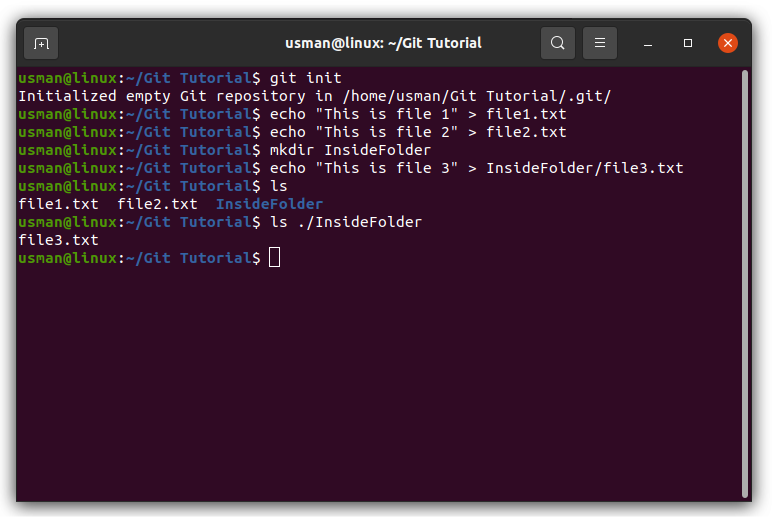
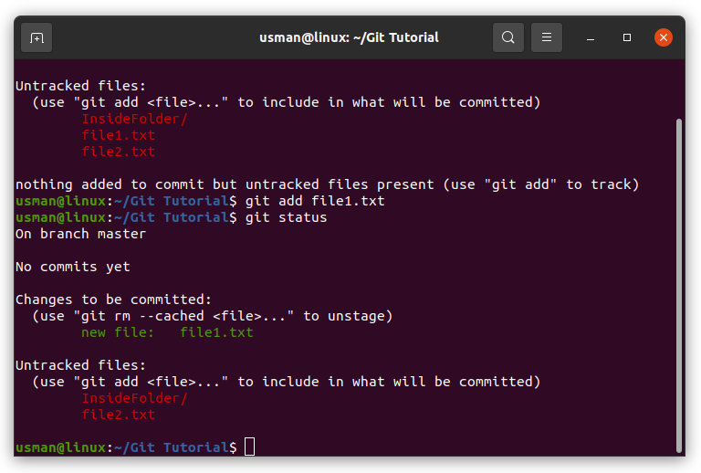
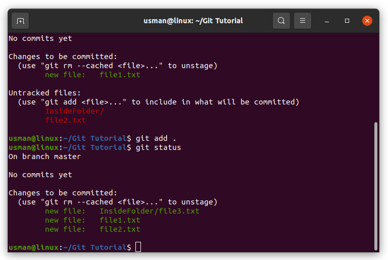
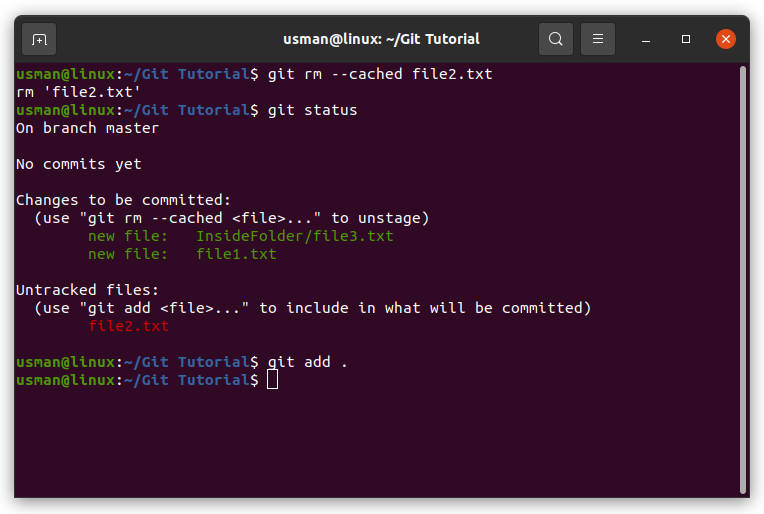
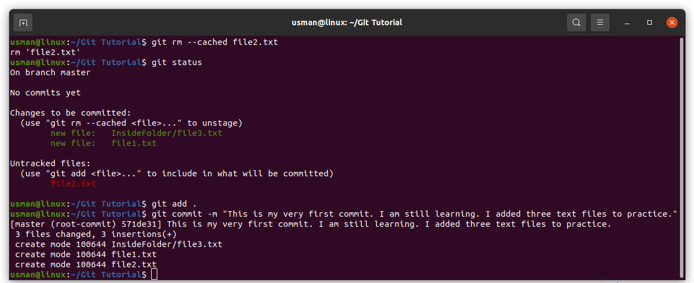

Article by Muhammad Usman
Version control helps developers track and manage changes to a software project’s code. As a software project grows, version control becomes essential.
Version control lets developers safely work through branching and merging. With branching, a developer duplicates part of the source code (called the repository). The developer can then safely make changes to that part of the code without affecting the rest of the project. Then, once the developer gets his or her part of the code working properly, he or she can merge that code back into the main source code to make it official. All of these changes are then tracked and can be reverted if need be.
Git is the most commonly used version control system. Git is software that runs locally. Your files and their history are stored on your computer. Git tracks the changes you make to files, so you have a record of what has been done, and you can revert to specific versions should you ever need to. Git also makes collaboration easier, allowing changes by multiple people to all be merged into one source. So regardless of whether you write code that only you will see, or work as part of a team, Git will be useful for you.
GitHub is a for-profit company that offers a cloud-based Git repository hosting service. Essentially, it makes it a lot easier for individuals and teams to use Git for version control and collaboration.
Git and Github are not the same thing. Git is an open-source, version control tool. GitHub is a company that makes tools which integrate with git. You do not need GitHub to use git, but you cannot use GitHub without using git.
First of all you need to create Github account and install git on your operating system.
If git is installed, running the command git --version will output git version
Now you need to add your name and email in git configuration. Run these commands.
git config --global user.name <Your Name>
Replace <Your Name> with your actual name. In my case, it will become git config --global user.name Usman
git config --global user.email <Github Email>
Replace <Github Email> with your email which you used to sign up for Github. It will be like git config --global user.email abc@email.com
Run these commands to verify if name and email are added.
git config --global user.name
This will output the name you added
git config --global user.email
This will output the email you added
Create a new directory where you want to place your project files and set this directory as current working directory in your Terminal or Command Prompt.
Run the command git init. After
running the command, an empty repository will be created locally in your current directory.
This repository will be represented by .git directory which is hidden. We can also work in branches in git, by default there will be one branch created named master. Tradition is that your master branch should contain only fully working tested code. If you need to add new features or update your code, create a new branch, work on it, when you're sure that this code is now error free and fully working, merge this new branch to master.
Creating and merging branches are explained later.
We will use plain text files for this tutorial. Add some files in current working directory, let's say file1.txt, file2.txt. Also create another folder here and add file3.txt in it. Add some text in these files.
File contents are:
file1.txt: This is file 1
file2.txt: This is file 2
InsideFolder/file3.txt: This is file 3
Till now, we have empty repository and we have some files in our working directory. To work correctly, local repository need to track the files so git can know the histroy of these files.
So we need to add these files to this repository. Running the command git status will tell
you the details of files which are not added to the repository or which files are new or updated.
You can see, this command is telling which branch you're currently on and there are some untracked files
and directories. We need our repository to track these files. If you want to add all files at once, run
the
command git add . (dot at the end). If don't want to add all files, you can also add files
explicitly by running the command git add <filename>
Replace filename with file you want to add. We can also add multiple files with this command. This command will be like git add file1.txt or if adding multiple files git add file1.txt file2.txt
Let's say we add file1.txt. After adding, check the status of git.
You can see it is telling us that there is new file and there are still two untracked files. It is upto us if we wan't to include these remaining files also or not, there is no restriction. Let us add all files and then check git status.
In git context, adding files is technically known as STAGING.
If for any reason, you don't want to add file (unstage), but you already did it, running command
git rm --cached <filename> will unstage file for you.
Replace <filename> with the file you want to unstage. This command will be like git rm --cached file2.txt. Let us test this command.
You can see that file is unstaged. Add this file again.
We're all well aware of save. Everytime we save our work so that the work done should not lost.
This is what we want to do here. We want to save our work but working with git, we say commit our work. There is a command which will do this work for you.
git commit -m "<Message>"
Replace the <Message> with descriptive message, what you've done before this commit.
This command will be like git commit -m "This is my very first commit. I am still learning. I added three text files to practice."
